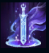

Shen
| Shen The Eye Of Twilight | |
|---|---|
| Release date | 24.03.2010 |
| Class | Warden |
| Positions | Top |
| Resource | Energy |
| Range type | Melee |
| Adaptive type | Physical |
| Base statistics | |||
| Health | 540 – 1985 | Energy | 400 |
| Health regen. | 7 – 19.75 |
Energy regen. | 50 |
| Armor | 19 – 70 | Attack damage | 52 – 99.6 |
| Magic resist. | 30 – 38.5 | Crit. damage | 175% |
| Move. speed | 340 | Attack range | 125 |
În rândul misterioșilor războinici ionieni din ordinul Kinkou, Shen are rolul de lider, de ochi al crepusculului. Dorind să rămână neatins de confuzia emoțiilor, a prejudecăților și a aroganței, Shen pășește pe calea nevăzută a judecății imparțiale dintre lumea fizică și cea a spiritelor. Pentru a-și îndeplini sarcina de a păstra echilibrul dintre cele două lumi, Shen folosește săbii din oțel și energie ocultă împotriva tuturor celor ce-l pun în pericol. | BARIERA KI După ce folosește o vrajă, Shen primește un scut. Dacă sunt afectați și alți campioni, timpul de reactivare al efectului scade. |
|||
|---|---|---|---|---|
 |
Atac Crepuscular Shen își cheamă sabia spiritului și provoacă daune cu ajutorul ei, în funcție de viața maximă a țintei. Puterea atacurilor lui este mult mai mare dacă sabia intră în contact cu un campion inamic, iar toți inamicii atinși sunt încetiniți cât timp fug de Shen. |
|||
REFUGIU SPIRITUAL Atacurile care l-ar fi lovit pe Shen sau pe aliații săi aflați lângă sabia spiritului sunt blocate. |
||||
| NĂLUCA Shen se repede într-o direcție și provoacă toți inamicii din calea sa. |
||||
UNIRE ÎN LUPTĂ Shen protejează campionul aliat țintă de daunele agresorilor și curând după aceea se teleportează în locul în care se află aliatul. |